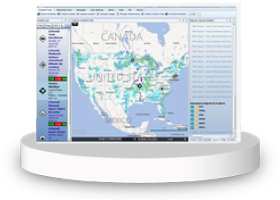

<!DOCTYPE html>
<!--[if lt IE 7]><html class="no-js lt-ie9 lt-ie8 lt-ie7"><![endif]-->
<!--[if IE 7]><html class="no-js lt-ie9 lt-ie8"><![endif]-->
<!--[if IE 8]><html class="no-js lt-ie9"><![endif]-->
<!--[if gt IE 8]><!--><html class="no-js"><!--<![endif]-->
<head>
    <meta charset="utf-8">
    <meta http-equiv="X-UA-Compatible" content="IE=edge,chrome=1">

    <title>SECTION 3: OPTIMIZING MISSION EFFECTIVENESS THROUGH SHARED SERVICES AND INTEROPERABILITY</title>

    <meta name="description" content="Site Description">

    <meta name="author" content="Author">

    <meta name="viewport" content="width=device-width">
    <link rel="stylesheet" href="assets/css/bootstrap.min.css">
    <style>
        body {
            padding-top: 60px;
            padding-bottom: 40px;
        }
    </style>
    <link rel="stylesheet" href="assets/css/bootstrap-responsive.min.css">
    <link rel="stylesheet" href="assets/css/main.css">
    <script src="//ajax.googleapis.com/ajax/libs/jquery/1.10.1/jquery.min.js"></script>
    <script src="assets/js/vendor/modernizr-2.6.2-respond-1.1.0.min.js"></script>
    <script type="text/javascript">
        $(document).ready(function () {
            var topaffix = $('.affix-top').position();
            $(window).scroll(function () {
                if ($(window).scrollTop() >= topaffix.top - 30) {
                    $('.affix-top').addClass('sticky');
                } else {
                    $('.affix-top').removeClass('sticky');
                }
            });
        });
    </script>

    <script type="text/javascript">

        var _gaq = _gaq || [];
        _gaq.push(['_setAccount', 'UA-18037328-1']);
        _gaq.push(['_trackPageview']);

        (function () {
            var ga = document.createElement('script');
            ga.type = 'text/javascript';
            ga.async = true;
            ga.src = ('https:' == document.location.protocol ? 'https://ssl' : 'http://www') + '.google-analytics.com/ga.js';
            var s = document.getElementsByTagName('script')[0];
            s.parentNode.insertBefore(ga, s);
        })();

    </script>
    <script type="text/javascript">
        //<![CDATA[
        var usasearch_config = { siteHandle: "ise-annual-report-2013" };

        var script = document.createElement("script");
        script.type = "text/javascript";
        script.src = "//search.usa.gov/javascripts/remote.loader.js";
        document.getElementsByTagName("head")[0].appendChild(script);

        //]]>
    </script>

</head>

<body data-spy="scroll">
<!--[if lt IE 7]><p class="chromeframe">You are using an <strong>outdated</strong> browser. Please
    <a href="http://browsehappy.com/">upgrade your browser</a> or
    <a href="http://www.google.com/chromeframe/?redirect=true">activate Google Chrome Frame</a> to improve your
    experience.</p><![endif]-->

<div class="navbar ">
  <div class="navbar-inner">
    <div class="container">
      <a class="btn btn-navbar" data-toggle="collapse" data-target=".nav-collapse">
        <span class="icon-bar"></span>
        <span class="icon-bar"></span>
        <span class="icon-bar"></span>
      </a>
      
      <div class="nav-collapse">
          <ul class="nav">
              <li><a href="index.html" class="active">Table of Contents</a></li>
              <li><a href="foreword-intro.html">Foreword</a></li>
              <li><a href="executive-summary.html">Exec Sum</a></li>
              <li><a href="section1.html">1: Collective Action</a></li>
              <li><a href="section2.html">2: Standards</a></li>
              <li><a href="section3.html">3: Shared Services</a></li>
              <li><a href="section4.html">4: Safeguarding</a></li>
              <li><a href="section5.html">5: Privacy</a></li>
              <li><a href="section6.html">6: Culture</a></li>
              <li><a href="conclusion.html">Way Forward</a></li>
              <li><a href="appendices.html">Appendices</a></li>
          </ul>
      </div><!--/.nav-collapse -->
    </div>
  </div>
</div>
<p class="linkback"><a href="http://www.ise.gov">Return to ISE.gov &raquo;</a></p><header>
  <div class="container">
      <div class="search-container">
          <form method="get" id="searchForm" action="http://search.usa.gov/search">
              <input id="affiliate" name="affiliate" type="hidden" value="ise-annual-report-2013" />
              <input type="text" size="40" onfocus="jQuery('#query-field-label').hide()" onblur="if (this.value == '') {jQuery('#query-field-label').show()}" name="query" id="query-field">
              <label id="query-field-label" for="query-field" style="display: block;">Search ISE Annual Report</label>
              <input name="commit" type="submit" value="GO">&nbsp;
          </form>
      </div>
      <div class="hero-unit" id="top" markdown="1">
      
          <br>
          <div class="title">Information Sharing Environment</div>
          <div class="title">2013 Annual Report to the Congress</div>
          <p>NATIONAL SECURITY THROUGH RESPONSIBLE INFORMATION SHARING</p>
      </div>
  </div></header>
<div class="container">

<div class="row">
<div class="span3">
    <div class="affix-top">
  <ul class="nav nav-tabs nav-stacked span3">
    <li class="dropdown-submenu"><a href="#section-1">ISE Interoperability Framework</a></li>
    <li class="dropdown-submenu"><a href="#section-2">Geospatial Information as a National Resource</a></li>
    <li class="dropdown-submenu"><a href="#section-3">Identity, Credential, and Access Management: Coordinating Identity Efforts Across the Federal Government</a></li>
    <li class="dropdown-submenu"><a href="#section-4">Assured Sensitive-but-Unclassified (SBU) - Controlled-Unclassified Information (CUI) Interoperability</a></li>
    <li class="dropdown-submenu"><a href="#section-5">Interoperability - Incremental Progress</a></li>
    <li class="dropdown-submenu"><a href="#section-6">Other Shared Services</a></li>
    <li class="dropdown-submenu"><a href="#section-7">Interlude: Backend Attribute Exchange Operational Pilot</a></li>
  </ul>
  <p><a href="#">Back to top</a></p>
  </div>
</div>
<div class="span9">
<div id="Section12">
  <h1><a href="#section-0" id="section-0">Section 3: Optimizing Mission Effectiveness through Shared Services and Interoperability</a></h1>

  <p>This section addresses ISE initiatives that are focused on
  sharing services and achieving interoperability across networks and security fabrics
  to enable efficiency, reduce duplication, and improve mission success. These
  activities are in many ways dependent upon and closely aligned with the adoption and
  implementation of common standards discussed in Section 2 of this Report and, as the
  standards activities rely upon the work of the ISA IPC Standards Working Group (SWG),
  the interoperability activities detailed in this section depend upon the ISA
  IPC's Information Integration Subcommittee (IISC) to provide
  oversight and governance through the Assured Sensitive but Unclassified (SBU) Network
  Interoperability Working Group and the Identity Federations Coordination (IFC)
  Working Group. Chaired by the Federal Bureau of Investigation (FBI) and the General
  Services Administration (GSA), respectively, these groups are carrying out the
  implementation activities for much of the interoperability objectives of the National
  Strategy for Information Sharing and Safeguarding (National Strategy).</p>

  <p>The following list of findings highlights accomplishments and
  opportunities for improvement. Further detail is provided in the pages that
  follow.</p>

  <h4><a href="#section-0a" id="section-0a">Accomplishments</a></h4>
  <ul>
  	<li><p>
   The
  ISA IPC Data Aggregation Working Group (DAWG) is developing a reference architecture
  framework to provide technical guidance to assist departments and agencies as they
  make decisions about developing interagency data-sharing requirements;</p></li>
  	<li><p>
   The
  GSA Federal Identity Credential and Access Management (FICAM) Program Office is
  leading the implementation of the FICAM Roadmap across all security domains;</p></li>
  	<li><p>
   The
  PM-ISE is coordinating an interagency effort with Department of Homeland Security
  (DHS), the Department of Interior (DOI), the National Geospatial Intelligence Agency
  (NGA), and the Department of Commerce (DOC) to develop a Geospatial Interoperability
  Reference Architecture (GIRA) in order to foster the reuse of geospatial services,
  reduce their IT investment costs, and promote information sharing;</p></li>
  	<li><p>
   The
  ISA IPC Federated Identity Working Group (FIWG) developed <em>A Guide for</em>
  <em>Federal Relying Parties</em> on how to accept third-party
  credentials;</p></li>
  	<li><p>
   The
  ISA IPC IISC led efforts with the Federal Cloud Credential Exchange (FCCX) project to
  provide a shared service for validation of third-party credentials that can be used
  by all departments and agencies;</p></li>
  	<li><p>
   The
  PM-ISE supported an event deconfliction initiative between the Regional Information
  Sharing System (RISS) Program and the High Intensity Drug Trafficking Areas (HIDTA)
  Program to increase the safety of law enforcement officers;</p></li>
  	<li><p>
   The
  SBU Working Group established a team of experts to develop an Identity and Access
  Management (IdAM) Reference Architecture for the ISE Enterprise Architecture
  Framework;</p></li>
  	<li><p>
   The
  Regional Information Sharing Systems (RISS) Network worked with PM-ISE and SBU
  partners to develop a National Information Exchange Model (NIEM) <a href="http://tools.niem.gov/niemtools/home.iepd">Information Exchange
  Package Documentation (IEPD)</a>, which will facilitate the sharing of
  information among justice-related systems; and</p></li>
  	<li><p>
   The
  PM-ISE is sponsoring an initiative to identify nationwide deconfliction standards and
  solutions, to interface deconfliction systems, and to develop a nationwide
  deconfliction strategy.</p></li>
  </ul>

  <h4><a href="#section-0b" id="section-0b">Opportunities</a></h4>
  <ul>
  	<li><p>
   Last
  year, 33% of ISE agencies reported that they did not accept IT security certification
  bodies of evidence from other federal agencies, nor did they make accreditation
  decisions without retesting. This year's data shows incremental
  progress in federated identity management, with only 10% of ISE agencies (from the
  2012 population) reporting that they do not practice IT security reciprocity with
  other federal agencies, and all responding agencies reporting progress in
  implementing federated identity management solutions aligning to the FICAM roadmap.
  The Backend Attribute Exchange (BAE) pilot and the Federal Cloud Credential Exchange
  (FCCX) project discussed in this section are focused on addressing federated identity
  management.</p></li>
  	<li><p>
  
  Resource constraints continue to impact interoperability efforts for
  SBU/CUI networks, with only 40% of ISE agencies this year reporting that they have
  implemented interconnection plans for SBU/CUI networks supporting ISE related
  missions.<a href="#_ftn41" id="_ftnref41" title=""><sup>[41]</sup></a> This is being
  addressed, in part, by the establishment of the ISA IPC Information Integration
  Sub-Committee (IISC) Identity Federation Coordination (IFC) working group, which
  seeks to improve governance of identity-related efforts across the Federal Government
  and across all security domains.</p></li>
  </ul>
  

  

  <h2><a href="#section-1" id="section-1">ISE Interoperability Framework (I<sup>2</sup>F)</a></h2>

  <p>Defining and adopting baseline capabilities to enable data,
  service, and network interoperability is a priority objective of the National
  Strategy. The PM-ISE developed I<sup>2</sup>F to be a key component in implementing
  this objective in that it will identify key decision points for ISE interoperability;
  provide a comprehensive, high-level description of each interoperability domain;
  establish the framework<a href="#_ftn42" id="_ftnref42" title=""><sup>[42]</sup></a> for
  implementing ISE information sharing capabilities and projects; and provide an
  alignment of interoperability reference architectures across the ISE.<a
  href="#_edn58" id="_ednref58" title=""><sup>[lviii]</sup></a></p>

  <p>The I<sup>2</sup>F will accomplish these objectives primarily
  through alignment to enterprise architecture frameworks used by ISE constituents; by
  introducing common templates to guide development of common interoperability
  artifacts; and by promoting tools and methodologies that promote interoperability
  considerations on reference architecture development and implementation.</p>

  <p>In addition, the I<sup>2</sup>F is designed to help ISE
  agencies better respond to complex policy challenges and to improve the delivery of
  services and information to citizens by driving long-term information sharing
  requirements&mdash;leveraging reuse capabilities for improvement, and
  information systems planning, investing, and integration to support the effective
  conduct of U.S. counterterrorism activities. I<sup>2</sup>F version 1.0 provides a
  pathway to align the strategic goals and objectives of federal departments and
  agencies, state, local, tribal, and territorial (SLTT) government agencies,
  private-sector partners, and foreign partners and allies to facilitate
  interoperability and information sharing. It builds upon and leverages existing
  policies, business practices, and technologies in a manner that fully protects the
  legal rights of all U.S. persons.</p>

  <h3><a href="#section-1a" id="section-1a">Alignment to Existing Architecture Frameworks</a></h3>

  <p>The I<sup>2</sup>F references current architecture
  frameworks used throughout the Federal Government to frame the applicable
  interoperability principles and domains. The interoperability domains are aligned
  with the following frameworks:</p>
  <ul>
  	<li><p> Federal Enterprise Architecture Framework (FEAF)</p></li>
  	<li><p> DoD Architecture Framework (DoDAF)</p></li>
  	<li><p> Global Reference Architecture</p></li>
  	<li><p> Intelligence Community Architecture Principles</p></li>
  </ul>
  <p>These frameworks provide methodologies and artifacts
  that enhance interoperability among diverse systems and data types to facilitate the
  transfer and exchange of necessary information. They align capabilities,
  competencies, and services in a way that is best defined for their specific
  communities. The I<sup>2</sup>F references these frameworks so that ISE participants
  can understand how the I<sup>2</sup>F interoperability requirements can be put into
  the context of existing enterprise architecture (EA) efforts. The I<sup>2</sup>F
  provides a higher-level mechanism to align reference architectures, which provide
  more specific requirements aligned to a specific service or capability. The final
  version of the I<sup>2</sup>F, scheduled for delivery in November 2013, will include
  detailed architecture alignment and interoperability artifacts.</p>

  <h3><a href="#section-1b" id="section-1b">A Whole-of-Government Approach to Data Stewardship and
  	Data Correlation</a></h3>

  <p>In February 2012, the ISA IPC DAWG released the report <em>ISE
  Data Aggregation Capabilities Applicable to Terrorism.</em> This
  report recommended accelerating the convergence of existing data aggregation
  architectures and encouraging the development of a data aggregation reference
  architecture with an end-state vision for government-wide data aggregation
  activities.</p>

  <p>In order to realize the end-state vision, in 2013 the DAWG
  began to develop a reference architecture framework designed to provide technical
  guidance to departments and agencies as they make decisions about developing
  interagency data-sharing requirements.</p>

  <p>
  The reference architecture is intended to align services,
capabilities, and standards as well as White House programmatic guidance and PM-ISE
implementation guidance; the initial version is planned for release by December 2013.
This whole-of-government approach will keep data as close to the data owners as possible,
while using standards to enable common services for discovery and access management, and
data correlation. Benefits include: increased data protection; more rapid information
sharing; improved data quality for mission operators; and improved safeguarding to reduce
the risk of bulk data leaks due to insider threats.</p>

  <h3><a href="#section-1c" id="section-1c">Geospatial Architecture Interoperability</a></h3>

  <p>To foster the reuse of geospatial services, reduce their IT
  investment costs, and promote information sharing, the office of the PM-ISE is
  coordinating an effort with the DHS, DOI, NGA, and the DOC to develop a Geospatial
  Interoperability Reference Architecture (GIRA). Currently in draft, it is expected
  that GIRA will be published during the first quarter of 2014.</p>

  <p>GIRA is intended to provide guidance and direction to managers
  and systems architects from federal agencies, SLTT agencies, private-sector partners,
  and foreign partners, in order to ensure the interoperability of geospatial services,
  fostering information sharing and ensuring fiscal responsibility. It provides a
  framework for the development of new geospatial system and solution investments;
  transition target architecture for the alignment of existing geospatial capabilities;
  methods for driving the integration of shared services with other investments; and
  performance measures for validating and reporting results.<a href="#_ftn43" id="_ftnref43" title=""><sup>[43]</sup></a></p>

  <p>GIRA sets the direction and provides specific requirements,
  standards, recommended best practices, and reference artifacts toward a targeted
  interoperable geospatial capability. GIRA is expected to provide a common, reference
  architecture to effectively manage, support, and achieve interoperability through
  geospatial system integration, acquisition, and/or development; and to provide a
  documented architecture that can be used to support geospatial program technical
  oversight and technical assessments for geospatial investments.<a href="#_edn59" id="_ednref59" title=""><sup>[lix]</sup></a></p>

  <h2><a href="#section-2" id="section-2">Geospatial Information as a National Resource</a></h2>

  <p>
  The Geospatial Intelligence Working Group (GWG) serves as a
DoD, IC, federal, and civil community-based forum. Its purpose is to advocate for IT
standards and standardization activities related to geospatial intelligence (GEOINT). In
this capacity, the GWG supports the NGA in carrying out GEOINT responsibilities. The GWG
places a heavy emphasis on collaboration between standards and enterprise architecture to
promote re-use, interoperability, and open, "non-specific
vendor" architectures.</p>

  <p>Collaboration among GWG members also promotes the development
  of new standards by promoting understanding the future needs of the development
  community. For example, in support of an NGA agency-wide Identity and Access
  Management (IdAM) system, a design pattern was developed specific to implementing
  IdAM in an Open Geospatial Consortium (OGC) paradigm. This work led to collaboration
  between NGA prototype efforts and international standards development organization
  test beds, with the purpose of collectively reducing technical risks and advancing
  the use of common standards.</p>

  <h2><a href="#section-3" id="section-3">Identity, Credential, and Access Management:
  	Coordinating Identity Efforts across the Federal Government</a></h2>

  <h3><a href="#section-3a" id="section-3a">Federated Identity Management</a></h3>

  <p>The GSA FICAM Program Office is leading the implementation of
  the National Strategy priority objective of extending and implementing the FICAM
  Roadmap across all security domains. In accordance with this planning, OMB is working
  with several qualified agencies to establish an Identity and Access Management Shared
  Services Line of Business, and the ISA IPC established the Identity Federation
  Coordination Working Group to work towards the interoperability of the various
  FICAM-related initiatives, and to improve governance of identity-related efforts
  across the Federal Government and across all security domains.<a href="#_edn60" id="_ednref60" title=""><sup>[lx]</sup></a> The
  Identity Federation Coordination Working Group will coordinate with SLTT partners to
  facilitate participation of non-federal partners in Identity, Credential, and Access
  Management (ICAM) activities, and to ensure that solutions are interoperable across
  the ISE.</p>

  <p>The Federated Identity Working Group (FIWG), another ISA IPC
  working group under the Information Integration Sub-Committee (IISC), worked on
  developing a guide for <em>Federal Relying Parties,</em> which
  provides supplemental instructions on how to implement a
  citizen-facing government website. The FIWG enabled federated identity trust across
  government agencies, focusing on cross-organizational identity federation, and
  supporting the development of content for other "how
  to" guides for agency use. The FIWG will develop additional guides to
  assist departments and agencies who are federating identities across government, and
  to ensure interoperability.<a href="#_edn61" id="_ednref61" title=""><sup>[lxi]</sup></a></p>

  <p>
  The IISC coordinated efforts with the Federal
Cloud Credential Exchange (FCCX) project, which will provide a shared service for
validation of third-party credentials that can be used by all departments and agencies.
As part of the National Strategy for Trusted Identities in Cyberspace, FCCX would enable
the acceptance of third-party credentials to facilitate access to online government
services. It would also include access to non-federal credential providers with a
pre-established relationship as approved FICAM credential providers under the FICAM Trust
Framework Solutions Program.</p>

  <p>FICAM efforts are aimed at using industry-based credentials
  that citizens already have. In order to ensure that these credentials are
  trustworthy, the government requires well-defined processes to ensure that these
  processes meet federal requirements. These processes, codified as Trust Frameworks,
  include requirements for the establishment of credentials and their issuance; privacy
  requirements; and auditing qualifications and processes.</p>

  <h3><a href="#section-3b" id="section-3b">FICAM Maturity Model</a></h3>

  <p>The FICAM Maturity Model was developed and released
  concurrently with the latest version of the FICAM Roadmap and Implementation Guide.
  The Maturity Model presents a series of questions with reference to the FICAM Roadmap
  and Implementation Guidance, which then determines the current level of maturity. The
  results provide respondents with a clear understanding of what needs to be done in
  order to improve an organization's maturity.<a href="#_ftn44" id="_ftnref44" title=""><sup>[44]</sup></a></p>

  <div>
   <table border="0" cellspacing="0" cellpadding="0" class="table table-bordered table-striped">
 <tr>
  <td width="439" valign="top">
   <h5><a href="#section-3c" id="section-3c">First Responder Access Card Technology</a></h5>

   <p>Emergency response officials must be able to
   collaborate in order to ensure public safety. For this to happen, many
   identity management challenges must be overcome. While federal agencies are
   rapidly deploying secure common identification standards, SLTT emergency
   response officials are also working to establish a Personal Identity
   Verification-Interoperable (PIV-I)/First Responder Authentication Credential
   (FRAC) standard that will be interoperable between local, state, and federal
   government partners.</p>

   <p>In response, the DHS Directorate for Science and
   Technology (S&amp;T) has been working on a smart-phone app that will allow
   SLTT officials to verify and track first responders arriving at a scene, as
   well as exchange attributes to make sure they have the necessary training.
   The application is being developed for SLTT officials so they can easily and
   inexpensively verify first responders as they arrive at a scene.<a  href="#_edn62" id="_ednref62" title=""><sup>[lxii]</sup></a></p>

   <p>The DHS S&amp;T Identity Management
   Testbed, hosted at Johns Hopkins Applied Physics Lab, has developed an app
   that can read PIV and PIV-I credentials as well as DoD Common Access Cards by
   using a commercial off-the-shelf Bluetooth smart-card reader. Because of the
   expense of these readers, DHS is also looking to take advantage of handsets
   that have built-in field communication to provide a more cost-effective
   access control tool. The app has been tested by Federal Emergency Management
   Agency (FEMA), and by other officials in Chester County, PA and in West
   Virginia.</p>
  </td>
 </tr>
   </table>
  </div>

  <h2><a href="#section-4" id="section-4">Assured Sensitive-but-Unclassified (SBU)
  	- Controlled-Unclassified Information (CUI)
  	Interoperability</a></h2>

  <p>The Assured Sensitive But Unclassified/Controlled Unclassified
  Information Network Interoperability Working Group (SBU/CUI WG) works under direction
  of the National Security Staff and ISA IPC, and is responsible for advancing
  interagency interoperability at the national level.</p>

  <p>During the reporting period covered by this Report, the
  Working Group continued its efforts to establish interoperability across existing
  networks; to identify areas of improved collaboration that are needed to remedy
  functional gaps; and to formulate action plans.</p>

  <p>In addition to establishing an IdAM Implementation Roadmap
  with specific partner milestones through the end of FY 2013, the Working Group also
  developed its first five-year SBU Strategic Plan&mdash;<em>SBU Way
  Forward</em>&mdash;to supplement the shorter-term
  milestones and objectives. The Working Group also agreed to a
  "sunset" for the SBU Working Group once Simplified
  Sign-On (SSO) has been achieved across the SBU/CUI federation.</p>

  <p>Since June 2011, the Sensitive But Unclassified
  Working Group has been focused on SSO, search and discovery, and standardized
  security controls. In 2012, the SBU/CUI Working Group realigned SSO,<a
  href="#_ftn45" id="_ftnref45" title=""><sup>[45]</sup></a> search
  and discovery, and security focus teams to concentrate on IdAM. The SBU/CUI Working
  Group includes these four major law-enforcement, public-safety, and intelligence
  systems:</p>
  <ul>
  	<li><p> The FBI's CJIS Law Enforcement
  Enterprise Portal (LEEP);</p></li>
  	<li><p> The Regional Information Sharing Systems Network
  (RISSNet);</p></li>
  	<li><p> The DHS Homeland Security Information Network (HSIN);
  and</p></li>
  	<li><p> The National Security Agency's (NSA)
  Intelink-U.</p></li>
  </ul>

  <p>Additionally, this year the working group welcomed
  observer-contributor participation from NGA, DOI, and the Federal Aviation
  Administration (FAA).</p>

  <p>This project included a detailed matrix of network
  visualizations in both federal and non-federal space, including graphical
  illustrations; e.g., ontology of connecting partnership nodes, an initial data model,
  and a final report that includes a detailed scope of the federated partnership.</p>

  <p>Interoperability progress within the SBU environment was
  highlighted by PM-ISE and the SBU Working Group at several organization conferences,
  including the International Association of Law Enforcement Intelligence Analysts
  (IALEIA); the National Law Enforcement Intelligence Units (LEIU); DoD Identity
  Protection and Management (IPM); the Counterintelligence Coordination Committee
  (CICC); and an in-house Executive Summit of interagency Chief Information
  Officers.</p>

  <p>Despite continued challenges in partner resources and internal
  program priorities, the SBU partnership continues to make progress, drive policy
  changes, and establish technical advancements for interoperability within the SBU
  domain across federal, state, and local communities.<a href="#_edn63" id="_ednref63" title=""><sup>[lxiii]</sup></a></p>

  <h2><a href="#section-5" id="section-5">Interoperability - Incremental
  	Progress</a></h2>

  <p>Partners continued to expand the SBU federation with new
  service-identity providers through existing partner portals. Resource constraints
  continue to impact SBU Working Group partners and their ability to synchronize
  efforts with federated partners in order to achieve all milestones, but progress
  continues.</p>

  <p>With PM-ISE support, RISS facilitated the transition of the
  Institute for Intergovernmental Research (IIR) into the National Information Exchange
  Federation (NIEF), and coordinated with the Oregon State Information Network (OSIN)
  and the South Dakota Connect Project to use RISSNet as their identity provider.</p>

  <p>Separately, PM-ISE supported an interoperability initiative
  between RISS Program and the HIDTA Program to enable event de-confliction and program
  standardization to increase the safety of law enforcement officers.<a
  href="#_edn64" id="_ednref64" title=""><sup>[lxiv]</sup></a></p>

  <p>The SBU Working Group continued shared senior executive level
  leadership responsibility by rotating the SBU Working Group chair every six months to
  solidify partnerships and enhance collaboration on the employment of the HSIN.</p>

  <p>Partner connectivity to HSIN will be initiated late in FY
  2013, to coincide with the completion of its migration to its new, HSIN-Release 3
  platform. During the last year measureable progress and achievements by SBU partners
  continues to accelerate toward the goal of full interoperability.</p>

  <p>Increased leadership also enabled the Working Group to
  establish an ad hoc expert team to develop an Identity and Access Management (IdAM)
  Reference Architecture for the ISE Enterprise Architecture Framework.</p>

  <div>
   <table border="0" cellspacing="0" cellpadding="0" class="table table-bordered table-striped">
 <tr>
  <td width="450" valign="top">
   <h5><a href="#section-5a" id="section-5a">HSIN Facilitated Prompt Response to Boston
   		Marathon Bombings</a></h5>

   <p>HSIN provided continuous, secure, web-conferencing
   capability to more than 400 individual, multi-jurisdictional intelligence
   officials nationwide, on-demand. This capability has been important in
   ensuring awareness and coordination between DHS I&amp;A, fusion center, and
   state and local law enforcement officials during the ongoing
   investigation.</p>

   <p>HSIN has also provided a secure, trusted platform for
   the sharing of documents and general updates between DHS National Protection
   and Programs Directorate (NPPD) and trusted members of the private sector
   through the NICC.</p>

   <p>Further, the HSIN Help Desk
   supported an unprecedented number of requests for the use of HSIN resulting
   from the Boston bombing. The day after the bombing, the HSIN Help Desk
   fielded 1,200 individual calls. In the week that followed, they responded to
   more than 5,000 requests. (Typically, the Help Desk gets 250 inquiries per
   day or 1,750 inquiries a week.) Before the Boston attack, the highest number
   of calls the Help Desk had received in one day was 500, during the Deep Water
   Horizon Oil Spill.</p>
  </td>
 </tr>
   </table>
  </div>

  <h3><a href="#section-5b" id="section-5b">Federated Attribute Sharing on the Secret Fabric</a></h3>

  <p>The purpose of the Federated Attribute Sharing on the Secret
  Fabric (FASS) study was to determine how the IC agencies operating on the Secret
  fabric could best establish a full IdAM presence and support the needs of
  authentication, authorization, and attribute retrieval.<a href="#_ftn46" id="_ftnref46" title=""><sup>[46]</sup></a> These
  capabilities are needed as the IC moves beyond hosting files and browsing to
  operating re-hosted versions of mission apps and meeting the demands of EO 13587.</p>

  <p>The FASS study showed that some IC agencies are moving ahead
  to establish applications and an IdAM component presence on Secret Internet Protocol
  Router Network (SIPRNET), and some do not need to do so. Where each agency stands in
  its progress is driven by demand from its own and from other Secret-level users on
  the fabric. Those agencies hosting significant applications (for example, NSA and
  NGA) are heading towards re-hosting their IdAM components; other agencies, who are
  not hosting resources, are interested in how identities can be provisioned.</p>

  <p>The second major finding of FASS was that attribute federation
  within the IC components, with the DoD, and with other federal partners should be
  straightforward and fairly easily accomplished. For example, the
  IC's <em>Security Assertion Markup Language Attribute Sharing
  Profile</em> protocol is successfully implemented on Joint Worldwide
  Intelligence Communications System (JWICS); the DoD <em>Enterprise Identity and
  Attribute Service</em> interface is heavily used in the DoD today;
  and finally, there is some test use of the <em>Backend Attribute Exchange</em>
  (BAE) protocol.</p>

  <p>The third finding of this study was that there will be
  significant work needed in order to handle the IC's non-Common
  Access Card (CAC) holders. These users will need to be provisioned in order to be
  able to have their attributes discovered.</p>

  <h3><a href="#section-5c" id="section-5c">Developing Interoperability, Simplified Sign-On (SSO) and
  	Search Capabilities</a></h3>

  <p>RISS is the only non-federal entity, and RISSNet is one of
  only four networks participating in an interagency project&mdash;known
  as the Assured <a href="http://ise.gov/integrating-front-line-assured-sensitive-unclassified-sbu-interoperability">
  Sensitive but Unclassified (SBU)</a> Interoperability
  Initiative&mdash;that are designed to save users time, maximize limited
  resources, and help law enforcement officers quickly identify and use actionable
  information.</p>

  <p>RISS is a foundational partner in establishing <a href="http://ise.gov/improving-protection-while-expanding-access#management">federated identity management and access control</a> within the SBU
  community. In 2012, working with PM-ISE and the SBU partners, RISS led the
  development of an <a href="http://tools.niem.gov/niemtools/home.iepd">Information Exchange Package Documentation (IEPD)</a>, which will
  facilitate the sharing of information through a security-trimmed federated search
  among justice-related systems.</p>

  <p>RISS is also working with fellow SBU partners, such as
  Intelink, LEO, and HSIN, to develop SSO and search capabilities. More than 10,000
  users from trusted partner systems are using federated identity to access RISSNet
  resources. Through RISSNet and RISS's partnerships, an
  unprecedented level of information has been shared, resulting in the arrest and
  prosecution of thousands of criminals and the seizure of millions of dollars in
  narcotics, property, and currency.</p>

  <h3><a href="#section-5d" id="section-5d">Advancing Identity Access Management (IdAM) with the
  	Backend Attribute Exchange (BAE)</a></h3>

  <p>The IdAM framework continues alignment with the Federal
  Identity, Credential and Access Management (FICAM) Roadmap and Implementation Guide
  and connects with other IdAM initiatives, like the Backend Attribute Exchange (BAE)
  initiative with GSA.</p>

  <p>The Federal Government continues to develop a strong BAE
  capability. In 2012, PM-ISE initiated work on operationalizing a BAE by partnering
  with the GSA's Office of Government-Wide Policy on an initial test
  scenario in which an ISE mission partner will use BAE to access information from an
  external portal, such as the RISS.</p>

  <h2><a href="#section-6" id="section-6">Other Shared Services</a></h2>

  <h3><a href="#section-6a" id="section-6a">The DHS Common Operating Picture (COP)</a></h3>

  <p>
  Homeland Security Presidential Directive 5
  (HSPD-5) designates the Secretary of the Department of Homeland Security as the
  "Principal Federal Official for Domestic Incident
  Management." To meet its statutory requirements, the DHS Office of
  Operations Coordination and Planning, in collaboration with the DHS Office of the
  Chief Information Officer, developed, operates, and maintains the
  Department's Common Operating Picture (COP).</p>

  <p>The DHS COP uses a services-oriented architecture that allows
  it to leverage existing DHS investments and enterprise-class capabilities and
  provides shared services, including both public and private cloud services, with base
  map and imagery services, as well as more than 500 data layers with street-level
  views, geo-coding and mobile Internet access.<a href="#_edn65" id="_ednref65" title=""><sup>[lxv]</sup></a></p>

  <p>Since February 2012, the DHS COP has monitored more than 1,300
  activities and published over 750 incident reports. The COP has more than 3,500
  users, including 1,700 DHS, and more than 600 other federal users across more than
  100 organizations; 136 state users across 62 fusion centers; and more than 900 state
  and local law enforcement users. The number of users continues to increase
  steadily.</p>

  <p>The Common Operating Picture Domain Executive Steering
  Committee (COP ESC), established by DHS in early 2012, continues to advance
  information sharing practices and COP capabilities across DHS. The COP ESC provides
  governance and oversight of all aspects of the COP Domain, which includes
  investments, systems, data, policies, and the procedures needed to ensure that
  homeland security partners have an enduring capability to effectively, efficiently,
  and rapidly access situational awareness information.</p>

  <h3><a href="#section-6b" id="section-6b">Critical Event Deconfliction</a></h3>

  <p>Investigative efforts create the potential for conflict
  between agencies or officers who are unknowingly working in close proximity to each
  other, or who may be coordinating an event focused on the same suspect at the same
  time. In these instances, agencies or officers may unintentionally interfere with
  each other's cases, potentially impacting the integrity of ongoing
  investigations, or resulting in endangering officers. Interconnecting existing event
  deconfliction systems and developing nationwide standards for deconfliction is
  necessary to ensure the safety of law enforcement officers.</p>

  <table border="0" cellspacing="0" cellpadding="0" class="table table-bordered table-striped">
   <tr>
 <td width="235" valign="top">
  <p>The Washington/Baltimore (W/B) High-Intensity Drug
  Trafficking Area (HIDTA) is a key player in efforts to make the three
  deconfliction systems used by HIDTA&mdash;RISSafe, Secure
  Automated Fast Event Tracking Network (SAFETNet), and
  Case Explorer&mdash;interoperable. Using technology developed
  through Mercyhurst University and the University of Maryland and housed at the
  W/B HIDTA, Case Explorer and RISSafe have been interfaced to allow for event
  deconfliction to take place across both systems for users in the Middle
  Atlantic-Great Lakes Organized Crime Law Enforcement
  Network<sup>&reg;</sup>. The interface has been in operation since March
  2013 and has proven successful. Efforts are underway to expand this interface
  across the entire RISS Project, beginning with the RISS Western States
  Information Network (WSIN).</p>

  <p>Elsewhere, the El Paso Intelligence Center (EPIC) is
  developing an interface between SAFETNet and Case Explorer which will close the
  loop across all three event deconfliction systems used by the HIDTAs.</p>
 </td>
   </tr>
  </table>

  <p>To meet the need for standards development and systems
  interoperability, PM-ISE is sponsoring an initiative to identify nationwide
  deconfliction standards and solutions; connect deconfliction systems; and develop a
  nationwide deconfliction strategy.</p>

  <p>Between January and April 2013, the initiative developed and
  tested an interface between the RISS Officer Safety Deconfliction System (RISSafe)
  and HIDTA's Case Explorer deconfliction system, which is now fully
  operational. Since January 2013, 62,657 operations have been entered, identifying
  25,054 conflicts. In addition, the FBI is utilizing its Guardian Program (iGuardian,
  eGuardian, and Guardian) to allow for event deconfliction both at the Unclassified
  and Secret classification levels.</p>

  <h3><a href="#section-6c" id="section-6c">DHS Information Sharing Segment Architecture v
  	3.0</a></h3>

  <p>In March 2013, DHS completed an update to their Information
  Sharing Segment Architecture (ISSA), which will serve as a guide for implementing the
  target architecture of the DHS Information Sharing Environment (DHS ISE). This
  update, known as ISSA Version 3.0, introduces a standard set of information sharing
  and technical capabilities in order to provide the entire DHS mission and enterprise
  functions with the policies, strategies, leadership, architecture, and governance
  needed to consistently share information. ISSA Version 3.0 focuses on improving its
  network of trust; enhancing its ability to securely and efficiently share information
  with stakeholders, especially the Intelligence Community (IC); and promoting better
  information sharing across DHS.</p>

  <p>The ISSA provides a blueprint for the DHS ISE that is designed
  to ensure that access to information does not hinder, but rather strengthens, the
  homeland security mission. Through the implementation of the ISSA Version 3.0, DHS
  will be able to achieve interoperability through common standards; identify
  redundancies and potential technological conflicts; locate opportunities for
  streamlining and/or collaborating with partners; identify information sharing gaps;
  align technology to mission goals and objectives; and gain a more thorough
  understanding of the complete functionality being provided by a specific technology
  for information sharing.</p>

  <h3><a href="#section-6d" id="section-6d">FBI Law Enforcement Enterprise Portal (LEEP)</a></h3>

  <p>
  <br /><br />Scheduled for deployment in 2013, the
  FBI's LEEP will provide the law enforcement, intelligence, and
  criminal justice communities with SSO access to Law Enforcement Online (LEO); the Law
  Enforcement National Data Exchange (N-DEx); the Joint Automated Booking System
  (JABS); INTELINK; INTELINK Chat; RISSNet (Identity and Service Provider); the
  National Gang Intelligence Center (NGIC); the Internet Crime Complaint Center (IC3);
  and the DOJ my File Exchange (myFX).</p>

  <p>LEEP will allow users to access these services via their home
  agency networks by simply clicking on an icon that is pre-populated at initial
  log-on. Participating agencies include the Chicago Police Department, the Texas
  Department of Public Safety, the Los Angeles Sheriff's Department,
  the Michigan State Police, the Atlanta Police Department, the Regional Information
  Sharing Systems Network (RISSNet), and INTERPOL's U.S. National
  Central Bureau.</p>

  <p>When users access LEO via LEEP, they will have access to LEO
  Special Interest Groups (SIGs)&mdash;collaborative environments for law
  enforcement agencies with common information needs; LEO Virtual Office
  (VO)&mdash;for storing agency training, policy, and procedure
  information; LEO Virtual Command Center (VCC)&mdash;a simple, effective,
  and secure information sharing and crisis management tool for law enforcement; and
  LEO-partnered sites and databases, including the Violent Criminal Apprehension
  Program (ViCAP); the Operational Response and Investigative Network (ORION); the
  eGuardian; Hostage Barricade Database System (HOBAS); the Innocence Lost Database
  (ILD); the National Center for Missing Exploited Children (NCMEC); and the National
  Alert System (NAS).</p>

  <h3><a href="#section-6e" id="section-6e">The DOI Incident Management Analysis and Reporting System
  	(IMARS)</a></h3>

  <p>The Department of the Interior (DOI) Incident Management
  Analysis and Reporting System (IMARS) is a records-management system designed to
  provide seamless sharing of law enforcement reporting information between all DOI law
  enforcement programs, and to provide a consistent, reliable way to share information
  with partner agencies. Deployed to more than 6,000 users in FY 2012, IMARS allows DOI
  to manage law enforcement activities on the 500 million acres of land that it owns
  and manages in order to ensure the safety and protection for millions of visitors
  each year.</p>

  <p>These responsibilities require the collection, analysis,
  management, and reporting of information by DOI law enforcement officers, including
  tribal law enforcement. IMARS access allows officers, agents, and dispatchers to
  access departmental and national databases from their immediate locations,
  significantly enhancing officer safety in the field. DOI is currently testing and
  evaluating an interface between IMARS and the FBI's eGuardian
  system.</p>

  <h3><a href="#section-6f" id="section-6f">DEA's De-confliction and Information
  	Coordination Endeavor (DICE) tool</a></h3>

  <p>First deployed in November 2009, the De-confliction and
  Information Coordination Endeavor (DICE) software tool continues to enable HIDTA,
  federal, state, and local law enforcement with enhanced investigative efficiencies
  through the ability to de-conflict information, such as phone numbers, e-mail
  addresses, license plates, and financial account information over a secure Internet
  browser.</p>
 </div>

 <div id="Section13">
  <div>
   <table border="0" cellspacing="0" cellpadding="0" class="table table-bordered table-striped">
 <thead>
 <tr>
  <th width="439">
   <h4><a href="#section-7" id="section-7"><strong>Interlude: Backend Attribute Exchange
   		Operational Pilot</strong></a></h4>
  </th>
 </tr></thead>

 <tr>
  <td width="439">
   <p>Over two years in the making, this
   year the Backend Attribute Exchange (BAE) Operational Pilot, a PM-ISE funded
   project designed to address a critical gap in intergovernmental access
   control, met a significant capability milestone for automated access control
   across multiple federal and state information systems. The capability allows
   for automated access decisions that enable users to successfully access the
   information needed to complete their mission while automatically ensuring
   that the information safeguards are enforced.<a href="#_edn66" id="_ednref66" title=""><sup>[lxvi]</sup></a></p>

   <p>During this pilot
   demonstration, users in Texas logged into the Texas network and accessed a
   protected federal database via the National Identity Exchange Federation
   (NIEF).<a href="#_ftn47" id="_ftnref47" title=""><sup>[47]</sup></a>
   The net result of timely access to information promotes the
   protection of law enforcement officers and the disruption of criminal or
   terrorist activity.</p>

   <p>RISSNet relied on an attribute
   maintained and provided by a separate federal agency&mdash;in
   this case DOJ's Bureau of Justice Assistance
   (BJA)&mdash;to authorize the user's access to
   its protected gang database. The transaction was carried out automatically,
   behind the scenes, invisible to the end user.</p>

   <h5><a href="#section-7a" id="section-7a">BAE Pilot Results</a></h5>

   <p>The outcome marks a significant
   improvement in a historically cumbersome, bureaucratic, and time-consuming
   process of verification for access to critical information. The pilot
   establishes the BAE as an effective, functional building block for the
   backbone of the Federal Government's information sharing
   and safeguarding strategy.</p>

   <h5><a href="#section-7b" id="section-7b">Key Partners</a></h5>

   <p>The GSA's Office
   of Government-wide Policy (GSA OGP); NIEF; the DOJ's BJA;
   the Institute for Intergovernmental Research (IIR); the RISS
   Program;<a href="#_ftn48" id="_ftnref48" title=""><sup>[48]</sup></a>
   the Texas Department of Public Safety; and the Texas State
   Police all played key roles in making this pilot a success.</p>
  </td>
 </tr>
   </table>
  </div>
 </div>

<div class="footnotes">
  <div id="ftn41">
  <p><a href="#_ftnref41" id="_ftn41" title=""><sup>[41]</sup></a> 
  IdAM solutions will continue to be a focus area until this gap is closed.</p>
 </div>

 <div id="ftn42">
  <p><a href="#_ftnref42" id="_ftn42" title=""><sup>[42]</sup></a> 
  The OMB has suggested using the term "interoperability
  framework" for the ISE rather than "enterprise
  architecture," to highlight the fact that the ISE is a cross-agency
  construct to be used as guidance for agencies developing the information sharing
  aspects of their enterprise architectures. The term "enterprise
  architecture" is used in the OMB context to refer to the architectures
  prepared by CIOs to manage the IT resources of a specific department or agency.</p>
 </div>

 <div id="ftn43">
  <p><a href="#_ftnref43" id="_ftn43" title=""><sup>[43]</sup></a> 
  The Office of Management and Budget (OMB) Circular A-16,
  "Coordination of Geographic Information and Related Spatial Data
  Activities," provides for improvements in the coordination and use of
  spatial data, and describes effective and economical use and management of spatial
  data assets in the digital environment for the benefit of the Federal Government
  and the Nation.</p>
 </div>

 <div id="ftn44">
  <p><a href="#_ftnref44" id="_ftn44" title=""><sup>[44]</sup></a> 
  The 2013 ISE Performance Assessment Questionnaire results show that 82% of agencies
  responded that they plan to adopt FICAM.</p>
 </div>

 <div id="ftn45">
  <p><a href="#_ftnref45" id="_ftn45" title=""><sup>[45]</sup></a> 
  Also referred to as Single Sign-On.</p>
 </div>

 <div id="ftn46">
  <p><a href="#_ftnref46" id="_ftn46" title=""><sup>[46]</sup></a> 
  Implementation Strategy, Federated Attribute Sharing on the Secret Fabric (FASS),
  Draft Version 2.0, 9 November 2012</p>
 </div>

 <div id="ftn47">
  <p><a href="#_ftnref47" id="_ftn47" title=""><sup>[47]</sup></a> 
  NIEF is a collection of U.S. government agencies that have come together to share
  sensitive law enforcement information. It was created in 2008 as an outgrowth of
  the Global Federated Identity and Privilege Management (GFIPM) program, which seeks
  to develop secure, scalable, and cost-effective technologies for information
  sharing within the law enforcement and criminal justice communities, based on the
  paradigm of federated identity and privilege management.</p>
 </div>

 <div id="ftn48">
  <p><a href="#_ftnref48" id="_ftn48" title=""><sup>[48]</sup></a> 
  RISS serves federal, state, local, and tribal criminal justice agencies in their
  effort to identify, detect, deter, prevent, and solve criminal and
  terrorist-related investigations.</p>
 </div>
 <div id="edn58">
  <p><a href="#_ednref58" id="_edn58" title=""><sup>[lviii]</sup></a> 
  IRTPA &sect;1016(b)(2)(A)(B)(D)(F)(J)(K)(M)</p>
 </div>

 <div id="edn59">
  <p><a href="#_ednref59" id="_edn59" title=""><sup>[lix]</sup></a> 
  IRTPA &sect;1016(b)(2)(C)(F)(J), (h)(2)(D)</p>
 </div>

 <div id="edn60">
  <p><a href="#_ednref60" id="_edn60" title=""><sup>[lx]</sup></a> 
  IRTPA &sect;1016(b)(2)(E)(I)</p>
 </div>

 <div id="edn61">
  <p><a href="#_ednref61" id="_edn61" title=""><sup>[lxi]</sup></a> 
  IRTPA &sect;1016(b)(2)(E)(F)(I)</p>
 </div>

 <div id="edn62">
  <p><a href="#_ednref62" id="_edn62" title=""><sup>[lxii]</sup></a> 
  IRTPA &sect;1016(b)(2)((I)(O)</p>
 </div>

 <div id="edn63">
  <p><a href="#_ednref63" id="_edn63" title=""><sup>[lxiii]</sup></a> 
  IRTPA &sect;1016(b)(2)(A)(B)(F)</p>
 </div>

 <div id="edn64">
  <p><a href="#_ednref64" id="_edn64" title=""><sup>[lxiv]</sup></a> 
  IRTPA &sect;1016(b)(2)(A)(D)(F)(J)</p>
 </div>

 <div id="edn65">
  <p><a href="#_ednref65" id="_edn65" title=""><sup>[lxv]</sup></a> 
  IRTPA &sect;1016(b)(2)(A)(B)(C)(D)(E)(F)(J)(K)(L)(M)</p>
 </div>

 <div id="edn66">
  <p><a href="#_ednref66" id="_edn66" title=""><sup>[lxvi]</sup></a> 
  IRTPA &sect;1016(A)(D)(F)(K)(N)</p>
 </div>
</div>

</div>
</div>
</div>

<!--[if lte IE 7]><div id="cover"></div><div id="iemessage">You are using an unsupported version of Internet Explorer. Your browser is old and can put your security at risk. Parts of this site may not work. We recommend you upgrade or switch to a modern browser.<br /><br /><a href="http://whatbrowser.org/"><strong>Learn more &raquo;</strong></a></div><![endif]-->
</body>

<script src="//ajax.googleapis.com/ajax/libs/jquery/1.9.1/jquery.min.js"></script>
<script>window.jQuery || document.write('<script src="assets/js/vendor/jquery-1.9.1.min.js"><\/script>')</script>
<script src="assets/js/vendor/bootstrap.min.js"></script>
<script src="assets/js/main.js"></script>

<!-- Hey! If you're reading this, come work with us! Message @StevenVDC and @shareandprotect and mention this message. -->

</body>
</html>